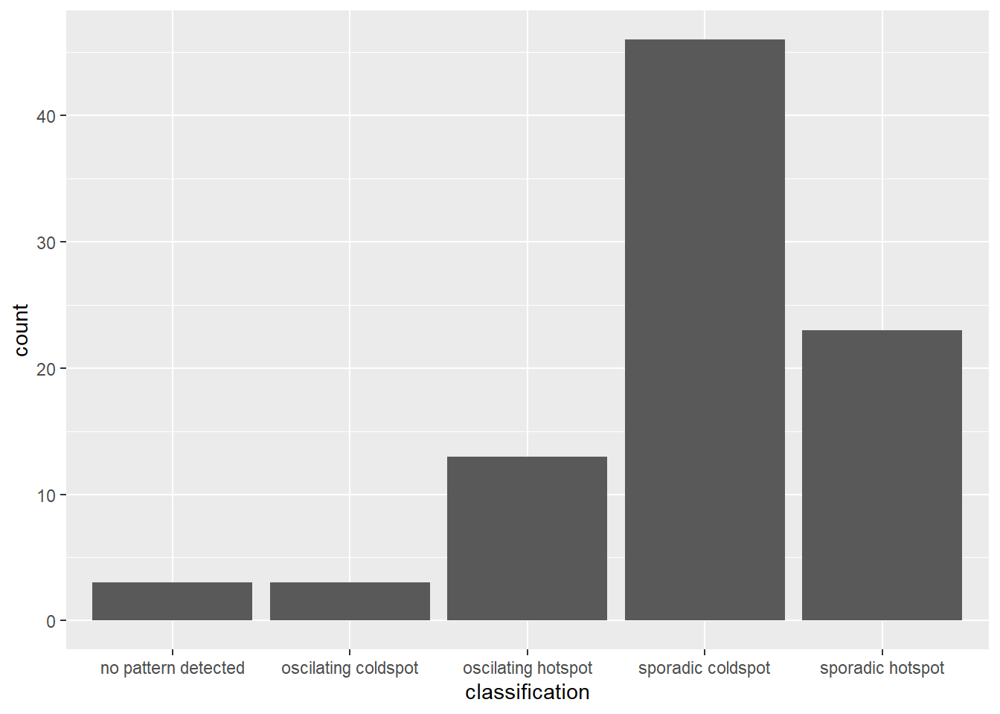
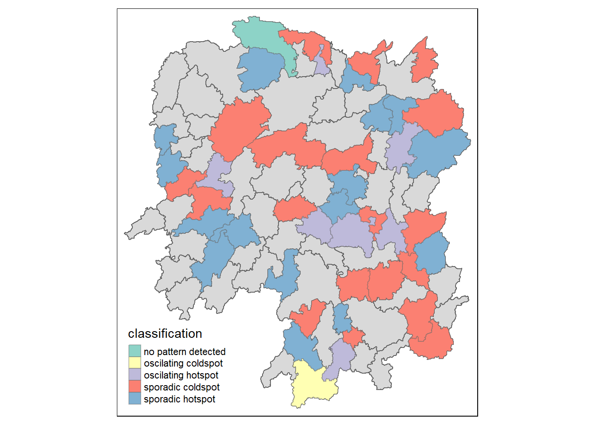

pacman::p_load(sf, sfdep, tmap, tidyverse,plotly)InClass_Ex07
Launching the packages into R environment
Import shapefile into r environment
hunan <- st_read(dsn = "data/geospatial",
layer = "Hunan")Reading layer `Hunan' from data source
`C:\Quanfang777\IS415-GAA\WeeklyExercise\week7\InClass_Ex07\data\geospatial'
using driver `ESRI Shapefile'
Simple feature collection with 88 features and 7 fields
Geometry type: POLYGON
Dimension: XY
Bounding box: xmin: 108.7831 ymin: 24.6342 xmax: 114.2544 ymax: 30.12812
Geodetic CRS: WGS 84GDPPC <- read_csv("data/aspatial/Hunan_GDPPC.csv")Rows: 1496 Columns: 3
── Column specification ────────────────────────────────────────────────────────
Delimiter: ","
chr (1): County
dbl (2): Year, GDPPC
ℹ Use `spec()` to retrieve the full column specification for this data.
ℹ Specify the column types or set `show_col_types = FALSE` to quiet this message.GDPPC_st <- spacetime(GDPPC, hunan,
.loc_col = "County",
.time_col = "Year")GDPPC_nb <- GDPPC_st %>%
activate("geometry") %>%
mutate(nb = include_self(st_contiguity(geometry)),
wt = st_inverse_distance(nb, geometry,
scale = 1,
alpha = 1),
.before = 1) %>%
set_nbs("nb") %>%
set_wts("wt")! Polygon provided. Using point on surface.Warning in st_point_on_surface.sfc(geometry): st_point_on_surface may not give
correct results for longitude/latitude datagi_stars <- GDPPC_nb %>%
group_by(Year) %>%
mutate(gi_star = local_gstar_perm(
GDPPC, nb, wt)) %>%
tidyr::unnest(gi_star)ehsa <- gi_stars %>%
group_by(County) %>%
summarise(mk = list(
unclass(
Kendall::MannKendall(gi_star)))) %>%
tidyr::unnest_wider(mk)ehsa <- emerging_hotspot_analysis(
x = GDPPC_st,
.var = "GDPPC",
k = 1,
nsim = 99
)ggplot(data = ehsa,
aes(x = classification)) +
geom_bar()
hunan_ehsa <- left_join(hunan, ehsa, by = c("County" = "location"))ehsa_sig <- hunan_ehsa %>%
filter(p_value < 0.05)
tmap_mode("plot")tmap mode set to plottingtm_shape(hunan_ehsa) +
tm_polygons() +
tm_borders(alpha = 0.5) +
tm_shape(ehsa_sig) +
tm_fill("classification") +
tm_borders(alpha = 0.4)Warning: One tm layer group has duplicated layer types, which are omitted. To
draw multiple layers of the same type, use multiple layer groups (i.e. specify
tm_shape prior to each of them).